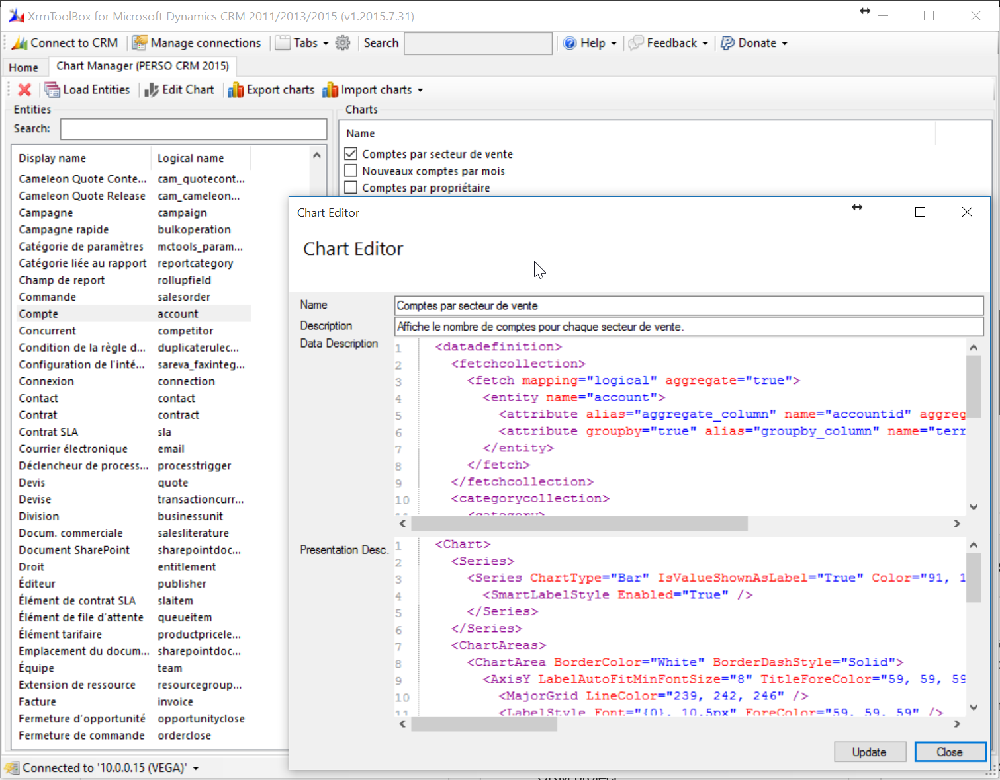
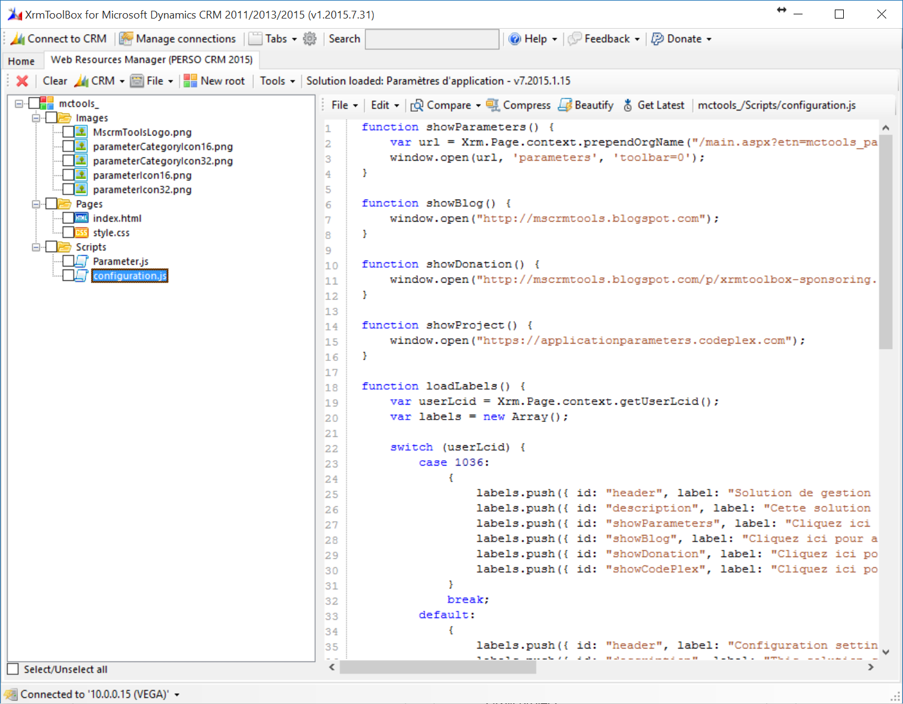
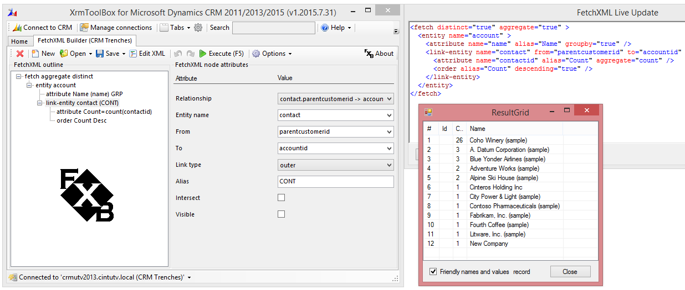
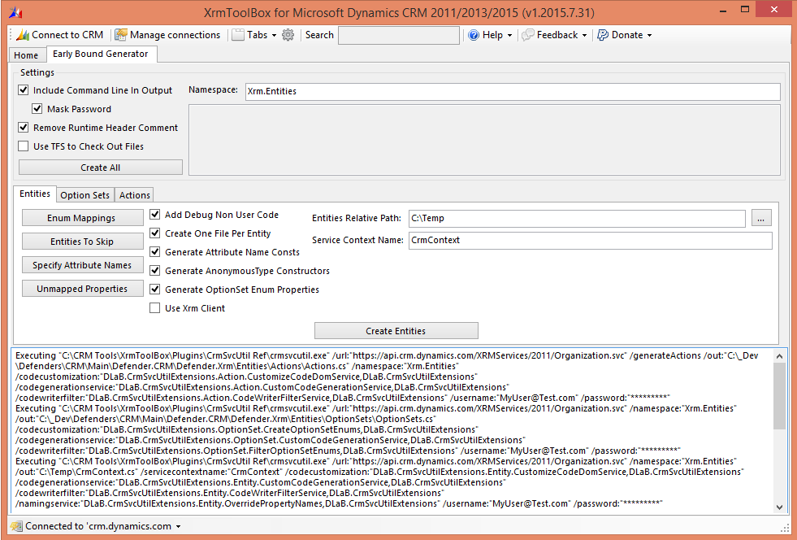
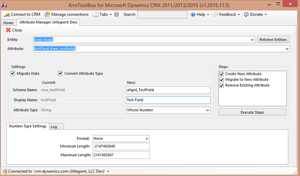

Chart Manager
Export, import and update your charts definition in one single screen

Web Resources Manager
Export, import and edit your web resources easily

FetchXML Builder Go to website
XrmToolBox plugin to create and run advanced FetchXML queries

Early Bound Generator Go to website
Adds advanced features and configuration to the generation of Early Bound CRM Entities

Attribute Manager Go to website
Allows the addition/editing of attributes, including renaming and changing Attribute Types
Your plugin here
If you want your plugin highlighted on XrmToolBox website homepage, please contact me using Twitter (see About page)